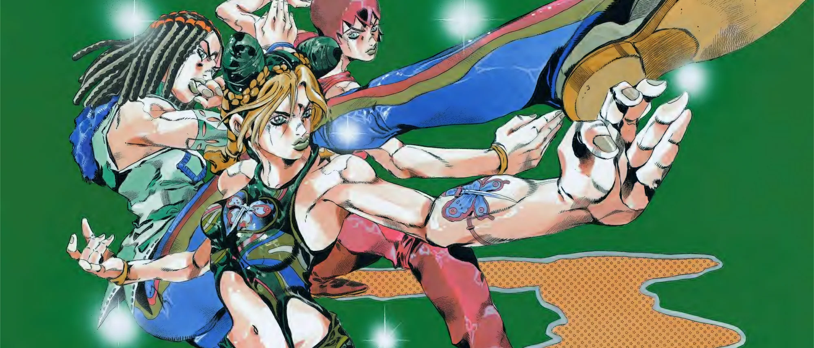
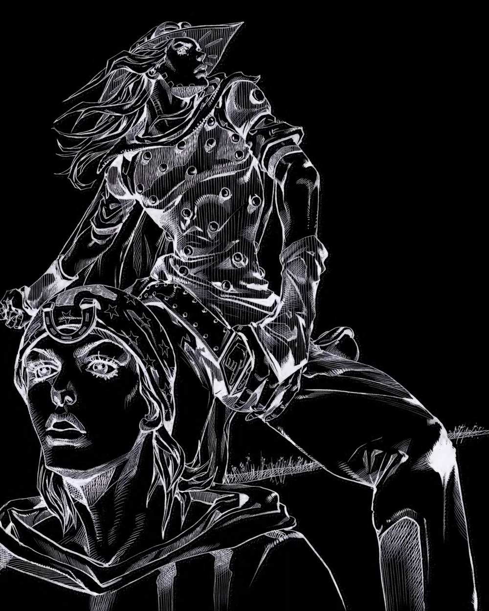

← Work / Case 01 / 2026
itsgiving
A face-tracked camera that turns your expressions into meme reactions and publishes them as a virtual webcam — so they land in Discord, OBS or any call, without a second screen.

The brief
Reaction images need a second screen, a folder, and a pause in the conversation. I wanted the reaction to come from my actual face, live, in the call — no alt-tab, no overlays, nothing the other side has to install.
The constraint that shaped it: whatever comes out has to look like a normal webcam feed to every app, because that's the only surface I can't control.
478
Face landmarks
52
Blendshapes
13
Reactions
7s
Calibration
How it works
MediaPipe reads the face once per frame and hands back both a dense landmark mesh and 52 expression weights. The weights are the useful part — they're already normalised, so a smile is a smile regardless of how far from the camera I'm sitting.
-
Calibrate once Seven seconds of neutral face, then a per-face baseline is written to
calibration.json. Every reading after that is measured against it, not against a global average. -
Match a pose Twelve named reactions plus one absurd catch-all. Each one is a small set of weighted conditions rather than a single threshold, so a smirk doesn't trip the laugh.
-
Publish it The chosen frame is composited and pushed into a virtual camera through OBS, at webcam resolution and frame rate, so the receiving app has no idea.
What it taught me
Per-face calibration was the whole project. The first version used generic thresholds and felt broken — it fired late, or fired on the wrong expression, and there was nothing to tune because the baseline was invisible. Writing the baseline to disk made the failure mode obvious and made the tool feel like it knew me.

Next
Blend two reactions instead of cutting between them, and let the calibration drift slowly so it doesn't need redoing when the light changes. After that, a second face — the tool is more fun with two people in frame.